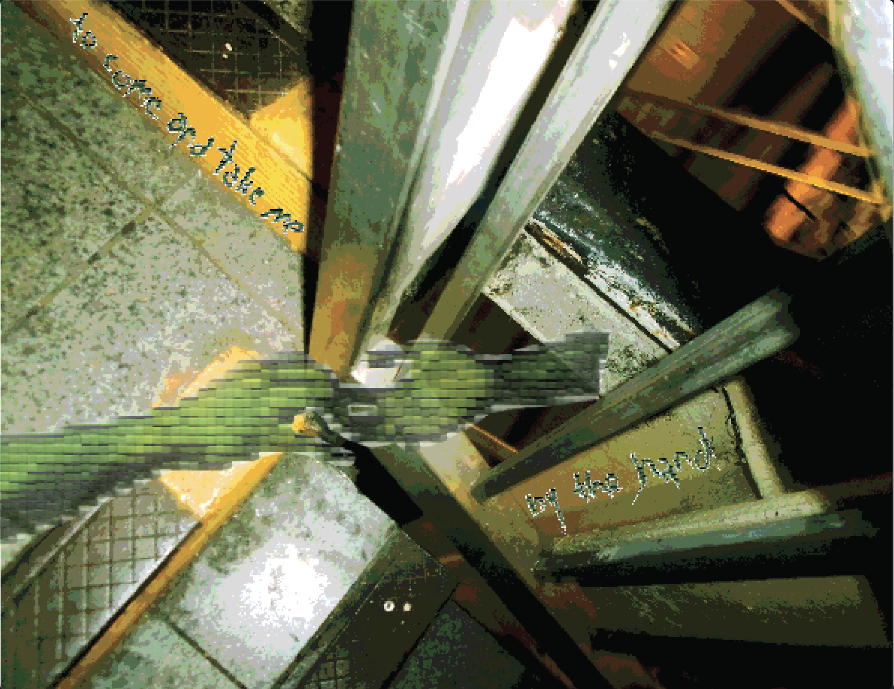
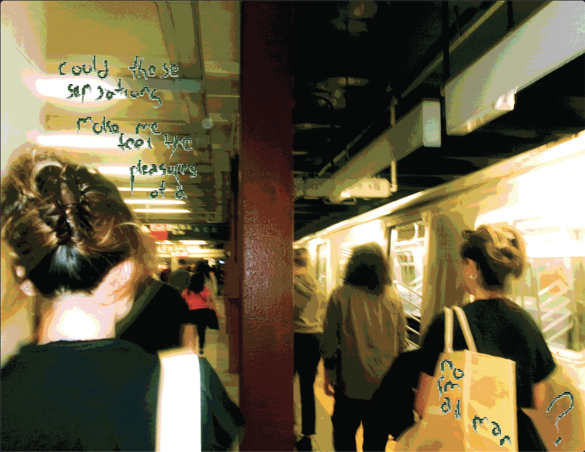
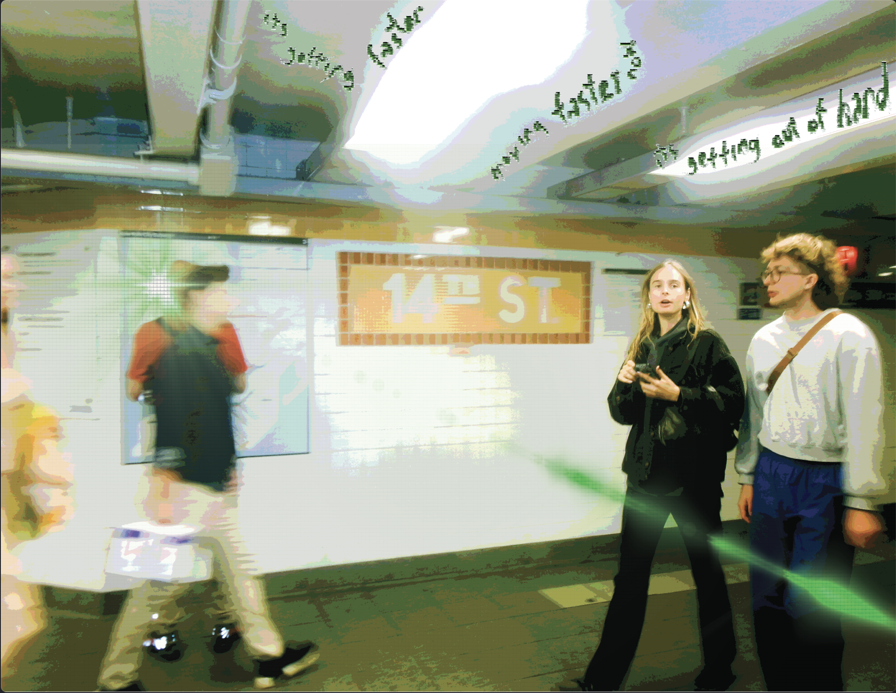
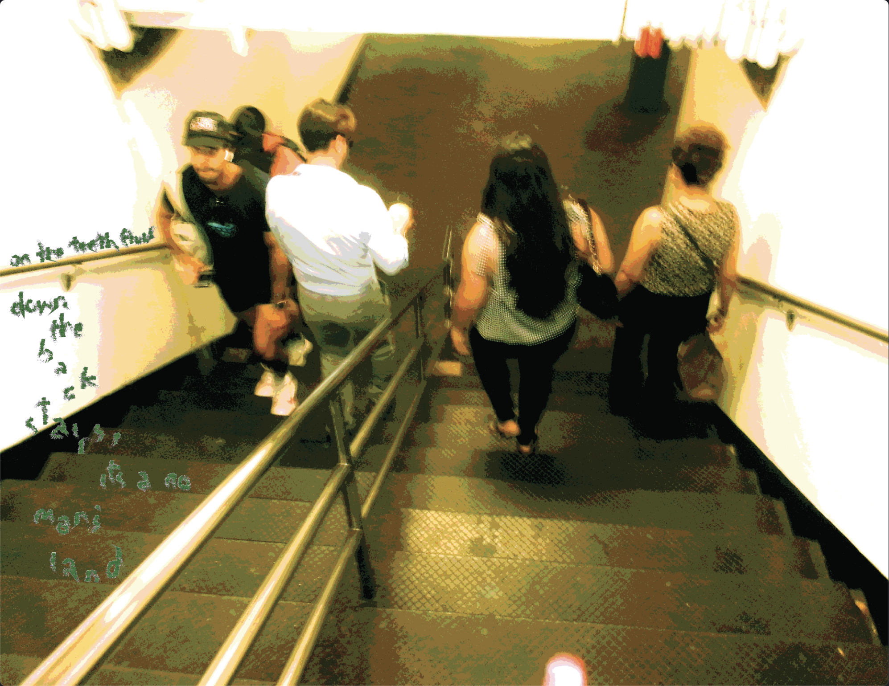
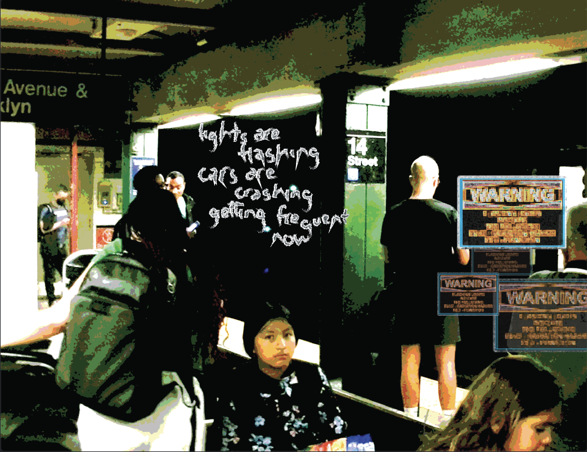
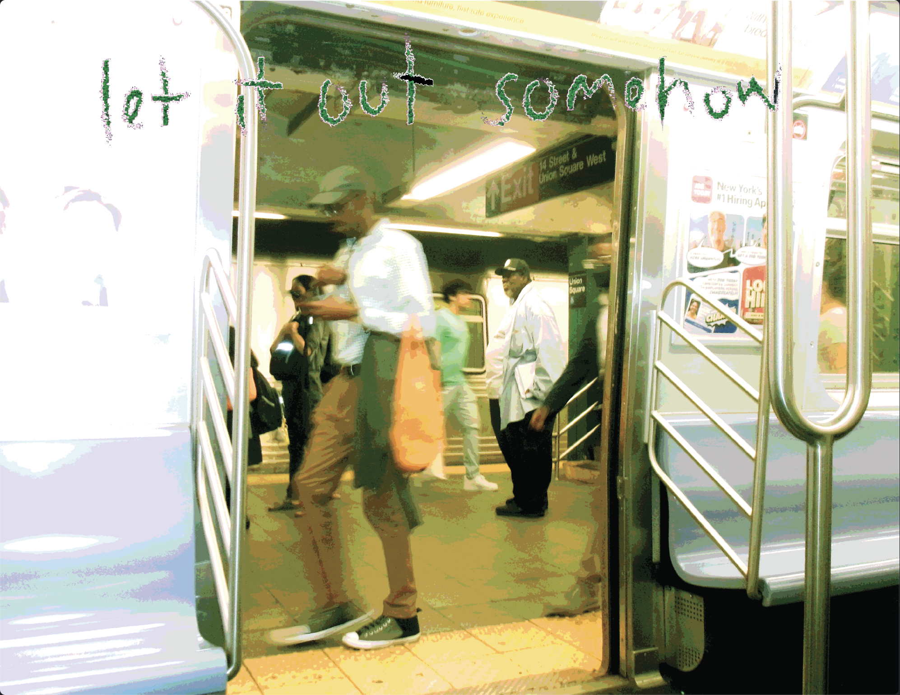
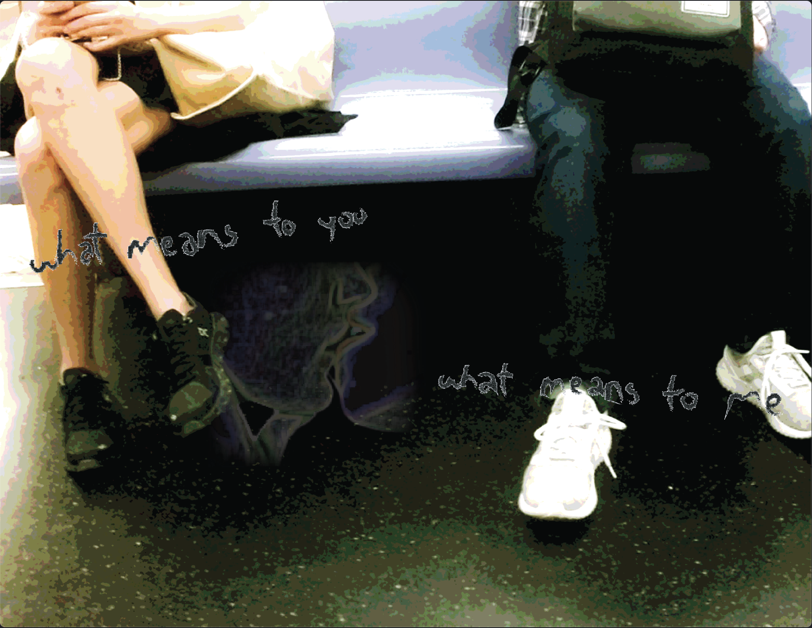
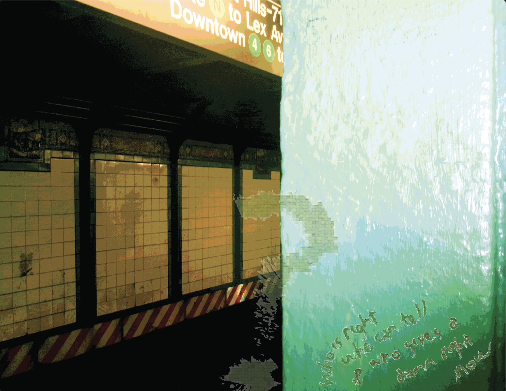
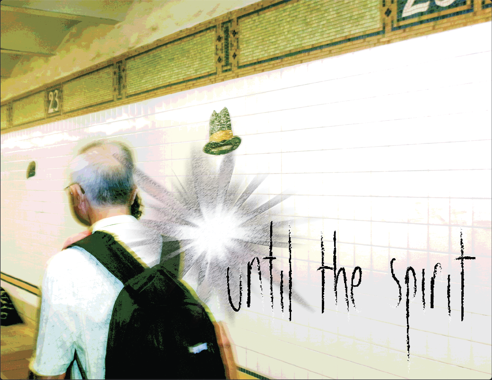
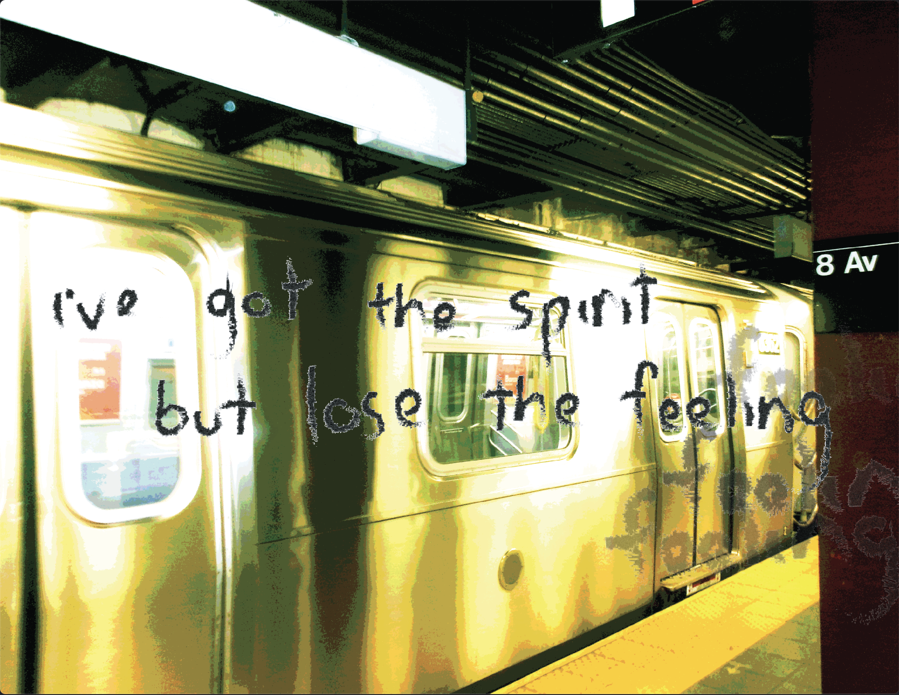

Experimental Media
Disorder



















This zine explores the liminal, restless nature of the Subway—where movement feels endless, yet no real destination is reached. Inspired by 'Disorder' by Joy Division, the visuals capture a sense of isolation within constant motion, using a chaotic, cyber-inspired aesthetic to reflect the disorienting energy of transit. The distorted, jagged typography reinterprets the song’s lyrics, emphasizing the feeling of being trapped in a cycle of movement, always on the edge but never crossing over.